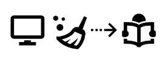
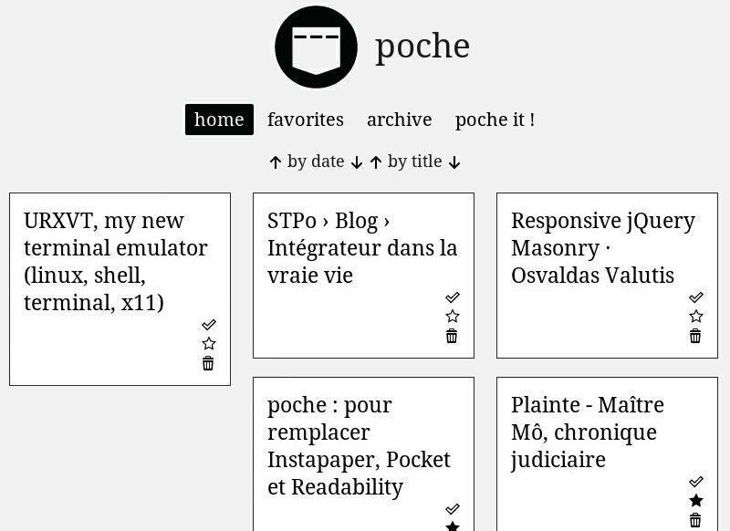
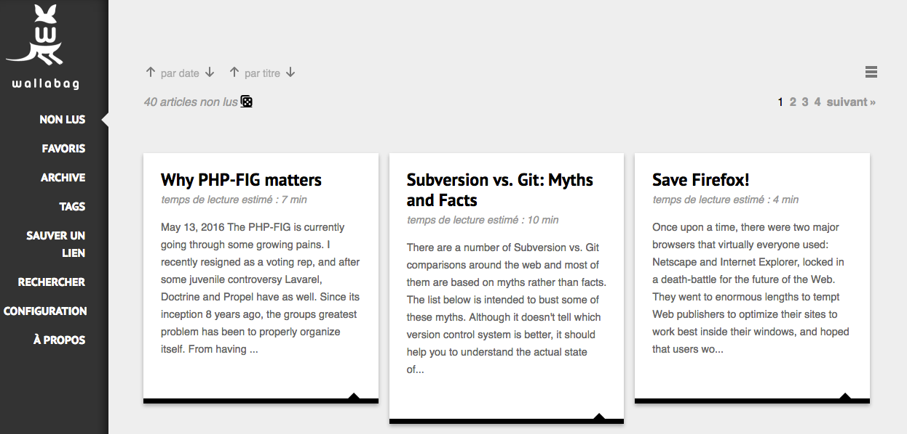
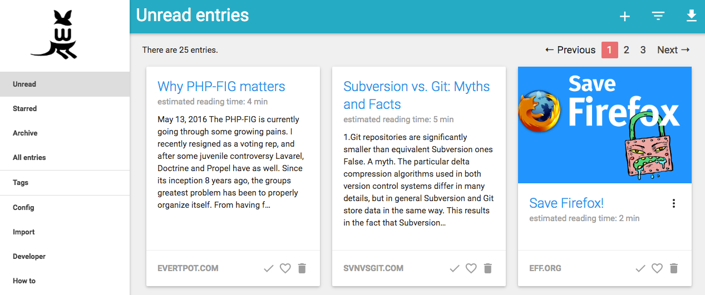
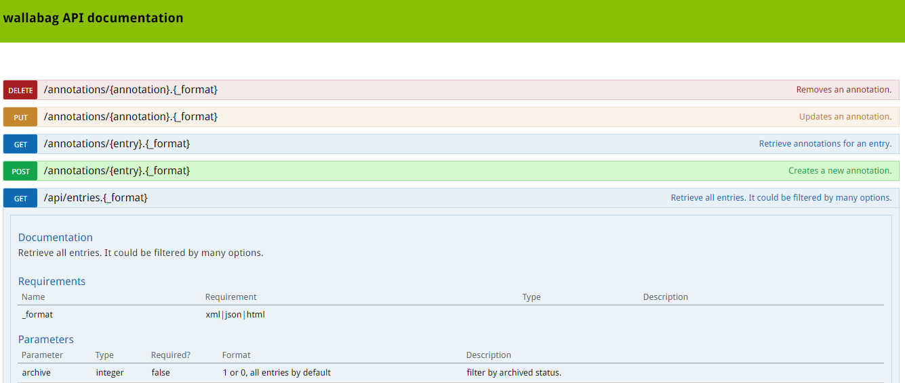
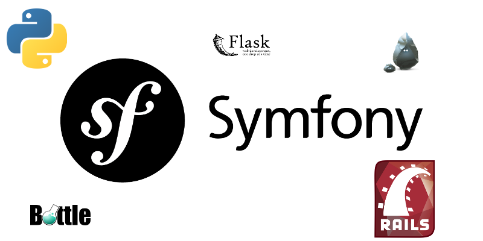
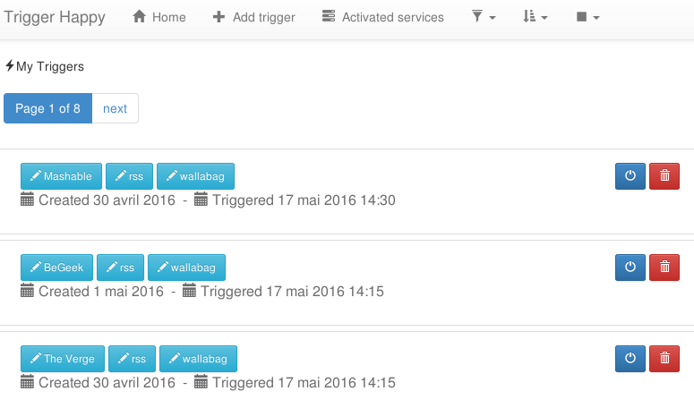

wallabag : comment on a migré vers Symfony 3
Par Jérémy Benoist (@j0k) et Nicolas Lœuillet (@nicosomb)
wallabag.org
Nous deux
Jérémy Benoist lead developer chez 20minutes |
Nicolas Lœuillet développeur chez Smile |
Plan
- fonctionnalités et histoire
- la v1 : pourquoi ça n'était pas mieux avant
- la v2 : pourquoi c'est mieux maintenant
- quelques benchmarks
- les étapes pour arriver à la v2
- les étapes en cours
- les étapes à venir
Fonctionnalités et histoire
Ce que ça fait
|  | |
 |
|
Histoire

Pourquoi ça n'était pas mieux avant
Pourquoi ça n'était pas mieux avant

Avant : version de PHP
- PHP >= 5.3.3
- Pas de framework
- Des classes PHP de plusieurs centaines de lignes
Avant : fréquence des mises à jour
- Pas de calendrier défini
- 10 versions mineures en deux ans
- Versions correctives qui apportaient de nouvelles fonctionnalités, pas de vrai respect de SEMVER
Avant : lacunes techniques
- Dépendances versionnées
- Pas d'API
- Pas de tests
- Pas de pull requests par l'équipe
- MAJ BDD manuelle
- Déploiement manuel via Filezilla
- Équipe de deux personnes
Pourquoi c'est mieux maintenant
Pourquoi c'est mieux maintenant

Maintenant : version de PHP
- PHP >= 5.5.9
- Compatible PHP 7
- Compatible HHVM (même si personne ne s'en sert)
- Symfony 3
Maintenant : fréquence des mises à jour
- Roadmap établie
- Une version mineure tous les trois mois
Maintenant : on comble les lacunes techniques
-
Sorte de Definition of Done pour chaque commit :
- Documentation utilisateur
- Tests unitaires et fonctionnels
- Relecture des PRs
- Déploiement via Capistrano
- Migrations BDD
- Le moins d'actions manuelles possible
- Équipe plus conséquente : une core team, des traducteurs, des développeurs
Maintenant : API pour les applications externes
Facilite l'intégration avec des applications tierces

Quelques benchmarks
Quelques benchmarks
| v1 | v2 | |
|---|---|---|
| Fichiers | 396 | 129 |
| Code | 94.922 lignes 240 lignes / fichier |
8.822 lignes 68 lignes / fichier |
| Commentaires | 37.855 lignes | 2.462 lignes |
| Sensio Insight | 29/100 2 ans pour la médaille Platinum |
32/100 3 semaines pour la médaille Platinum |
| Scrutinizer | 4,95/10 (1 erreur critique, +700 majeures) |
9,39/10 (4 erreurs majeures) |
Benchmark : chargement des pages
| v1 | v2 | |
|---|---|---|
| Liste d'articles (460) | 267ms 16 Mo |
620ms (221ms pour Sf) 28 Mo |
| Un article | 73ms 9 Mo |
342ms (230ms pour Sf) 16 Mo |
| Liste des tags (20) | 85ms 8,5 Mo |
498ms (225ms pour Sf) 22 Mo |
Road to v2 !
Road to v2 : le choix du framework

Road to v2 : adaptation de Full-Text RSS => Graby (mi avril 2015)
- Mise en place de tests fonctionnels sur l'existant
- Ré-organisation / refonte
- SiteConfig chargé via composer
Road to v2 : librairies utilisées pour l'API
- RestBundle
- CorsBundle
- OAuthBundle
- HateoasBundle
- ApiDocBundle
Road to v2 : listing des features par librairie
- Utilisateur => FosUserBundle
- Filtre => FormFilterBundle
- Changement de thème => LiipThemeBundle
- Export => phpepub, tcpdf, php-mobi
- Rule => RulerZ
- Maintenance => MaintenanceBundle
- Two factor authentication => TwoFactorBundle
- Annotations => AnnotatorJS
Road to v2 : les difficultés
- Installation de l'application plus complexe
- Limites de SQLite
Les étapes en cours
Les étapes en cours
- RabbitMQ
- Elasticsearch
Les étapes à venir
Les étapes à venir
- Front en React
- SaaS
- Intégration de wallabag dans des applis tierces
API : intégrations déjà réalisées
- Trigger-Happy.eu : projet clone libre de IFTTT, automatisant la récupération de données sur le web, pour les poster dans wallabag via son API automatiquement. Les données peuvent également provenir et être publiées depuis Twitter, Trello et plein d'autres services web existants
API : intégrations déjà réalisées
Trigger-Happy

API : intégrations déjà réalisées
- application Windows Phone (Android et iOS en cours de réalisation)
- Addon pour Firefox
- ttrss-to-wallabag-v2 : plugin pour ajouter dans wallabag depuis Tiny Tiny RSS
- Librairies Java et .NET
API : intégrations souhaitées
- Cozy Cloud
- ownCloud
- Fabricants de liseuses